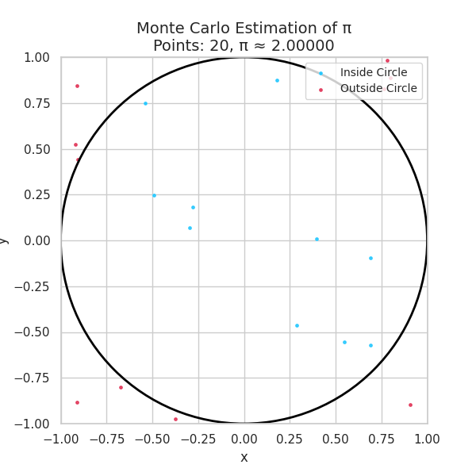
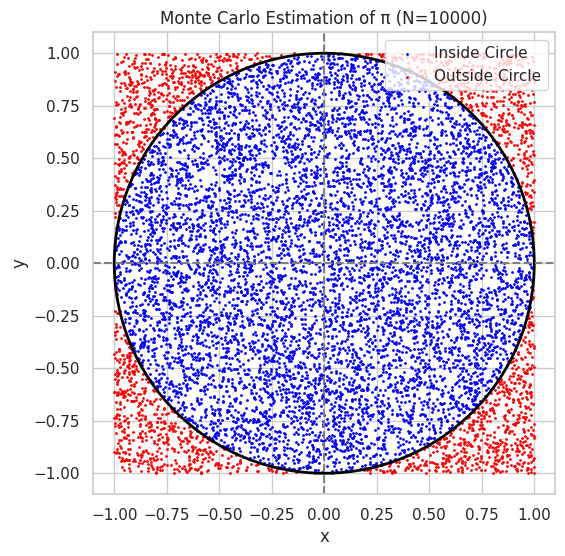
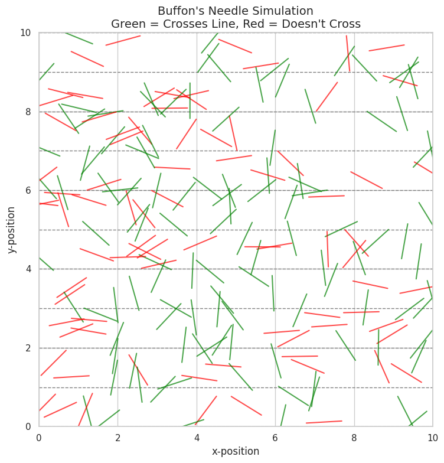

Problem 2
🧠 Estimating π Using Monte Carlo Simulation (Circle Method)
1. 🎓 Theoretical Foundation
Monte Carlo methods estimate values using random sampling and probabilistic principles. In this method, we use a unit circle inscribed in a square to estimate the value of π.
🔷 Geometric Principle
- Consider a unit circle of radius 1 centered at the origin.
- Enclose it in a square with side length 2 (ranging from -1 to 1 on both x and y axes).
- Generate random points \((x, y)\) uniformly inside the square.
- Count how many points fall inside the circle using the condition:
- The area of the circle is:
- The area of the square is:
- The ratio of the areas gives the probability that a random point falls inside the circle:
- Solving for π:
2. 🧪 Simulation


Below is the Python code to implement this method and estimate the value of π.
import numpy as np
import matplotlib.pyplot as plt
# Number of random points
N = 10000
# Generate N random points in the square [-1, 1] x [-1, 1]
x = np.random.uniform(-1, 1, N)
y = np.random.uniform(-1, 1, N)
# Compute distance from origin for each point
distance_squared = x**2 + y**2
# Count how many points fall inside the unit circle
inside_circle = distance_squared <= 1
count_inside = np.sum(inside_circle)
# Estimate π
pi_estimate = 4 * count_inside / N
print(f"Estimated π ≈ {pi_estimate}")
# Visualization
plt.figure(figsize=(6,6))
plt.scatter(x[inside_circle], y[inside_circle], color='blue', s=1, label='Inside Circle')
plt.scatter(x[~inside_circle], y[~inside_circle], color='red', s=1, label='Outside Circle')
circle = plt.Circle((0, 0), 1, color='black', fill=False, linewidth=2)
plt.gca().add_patch(circle)
plt.axhline(0, color='gray', linestyle='--')
plt.axvline(0, color='gray', linestyle='--')
plt.gca().set_aspect('equal')
plt.title(f"Monte Carlo Estimation of π (N={N})")
plt.legend()
plt.xlabel("x")
plt.ylabel("y")
plt.grid(True)
plt.show()
import numpy as np
import matplotlib.pyplot as plt
from matplotlib.animation import FuncAnimation, PillowWriter
from IPython.display import Image, display
# Generate N random points
N = 1000
step = 10 # number of points added per frame
x = np.random.uniform(-1, 1, N)
y = np.random.uniform(-1, 1, N)
distance_squared = x**2 + y**2
inside_circle = distance_squared <= 1
# Setup figure
fig, ax = plt.subplots(figsize=(6, 6))
sc_inside = ax.scatter([], [], color='deepskyblue', s=6, alpha=0.7, label='Inside Circle')
sc_outside = ax.scatter([], [], color='crimson', s=6, alpha=0.7, label='Outside Circle')
# Add unit circle
circle = plt.Circle((0, 0), 1, color='black', fill=False, linewidth=2)
ax.add_patch(circle)
# Format plot
ax.set_xlim(-1, 1)
ax.set_ylim(-1, 1)
ax.set_aspect('equal')
ax.set_xlabel("x", fontsize=12)
ax.set_ylabel("y", fontsize=12)
ax.set_title("Monte Carlo Estimation of π", fontsize=14)
ax.legend(loc='upper right', fontsize=10)
ax.grid(True)
# Update function for animation
def update(frame):
idx = (frame + 1) * step
x_in = x[inside_circle][:idx]
y_in = y[inside_circle][:idx]
x_out = x[~inside_circle][:idx]
y_out = y[~inside_circle][:idx]
sc_inside.set_offsets(np.column_stack((x_in, y_in)))
sc_outside.set_offsets(np.column_stack((x_out, y_out)))
total = len(x_in) + len(x_out)
pi_estimate = 4 * len(x_in) / total if total > 0 else 0
ax.set_title(f"Monte Carlo Estimation of π\nPoints: {total}, π ≈ {pi_estimate:.5f}", fontsize=14)
# Create animation
frames = N // step
ani = FuncAnimation(fig, update, frames=frames, interval=50, repeat=False)
# Save the animation as a GIF
ani.save("monte_carlo_pi.gif", writer=PillowWriter(fps=20))
# Display the GIF inline
display(Image(filename="monte_carlo_pi.gif"))
✅ Summary
- We used uniform random sampling within a square to approximate the value of π.
- The ratio of points inside the circle to the total number gives us a way to estimate π using:
- Increasing the number of points improves the accuracy due to the law of large numbers.
🧠 Theoretical Foundation: Buffon’s Needle Problem
📖 Problem Setup
Buffon’s Needle is a classic probability problem posed by Georges-Louis Leclerc, Comte de Buffon in the 18th century. It presents a simple yet profound way to estimate the value of \(\pi\) using randomness and geometry.
- Imagine a plane with equally spaced parallel lines a distance \(t\) apart.
- A needle of length \(L\) (where \(L \leq t\)) is randomly dropped onto this plane.
- We repeat this process \(N\) times and observe how many times the needle crosses a line.
This stochastic process can be used to estimate the value of \(\pi\) based on the probability of a crossing.
🧮 Derivation of the Formula
Let:
- \(L\) = length of the needle
- \(t\) = distance between lines (assume \(L \leq t\))
- \(N\) = number of needle drops
- \(C\) = number of times the needle crosses a line
The probability that a single needle will cross a line is given by:
Hence, if we drop \(N\) needles and observe \(C\) crossings, we estimate \(P \approx \frac{C}{N}\). Rearranging the equation to solve for \(\pi\):
🛠️ Simulation Steps
To perform the Monte Carlo simulation of Buffon’s Needle:
- Randomly drop \(N\) needles:
- For each needle, generate:
- A random distance from the center of the needle to the nearest line:
$$ y \in [0, t/2] $$ -
A random angle \(\theta\) between the needle and the parallel lines:
$$ \theta \in [0, \pi/2] $$ -
Determine if a needle crosses a line:
-
A needle crosses a line if the vertical projection from its center exceeds \(y\), i.e.: $$ \frac{L}{2} \sin(\theta) \geq y $$
-
Count the number of crossings \(C\).
-
Estimate \(\pi\) using the derived formula: $$ \pi \approx \frac{2L \cdot N}{t \cdot C} $$
📌 Important Notes
- For accurate results, ensure \(L \leq t\).
- The larger the number of trials \(N\), the more accurate the approximation of \(\pi\) becomes.
- Buffon's Needle illustrates the deep connection between geometry, probability, and mathematical constants like \(\pi\).
🎨 Visualization of Buffon's Needle Simulation


import numpy as np
import matplotlib.pyplot as plt
import matplotlib.animation as animation
from matplotlib.animation import PillowWriter
# Parameters
L = 0.9 # Needle length
t = 1.0 # Distance between lines
N = 200 # Number of needle drops
line_count = 10 # Number of parallel lines
# Generate random needle centers and angles
x_centers = np.random.uniform(0, line_count, N)
y_centers = np.random.uniform(0, line_count, N)
angles = np.random.uniform(0, np.pi, N)
# Calculate needle endpoints
dx = (L / 2) * np.cos(angles)
dy = (L / 2) * np.sin(angles)
x1 = x_centers - dx
x2 = x_centers + dx
y1 = y_centers - dy
y2 = y_centers + dy
# Determine crossings
crossings = (np.floor(y1 / t) != np.floor(y2 / t))
# Set up figure and axes
fig, ax = plt.subplots(figsize=(8, 8))
# Initialize plot
def init():
ax.set_xlim(0, line_count)
ax.set_ylim(0, line_count)
ax.set_aspect('equal')
ax.set_xlabel("x-position")
ax.set_ylabel("y-position")
ax.set_title("Buffon's Needle Simulation\nGreen = Crosses Line, Red = Doesn't Cross", fontsize=14)
ax.grid(True)
for i in range(line_count + 1):
ax.axhline(i * t, color='gray', linestyle='--', linewidth=1)
return []
# Update function for animation
def update(frame):
color = 'green' if crossings[frame] else 'red'
ax.plot([x1[frame], x2[frame]], [y1[frame], y2[frame]], color=color, alpha=0.7)
return []
# Create animation
ani = animation.FuncAnimation(fig, update, frames=N, init_func=init, blit=False, interval=50, repeat=False)
# Save as GIF
gif_path = "/content/buffon_simulation.gif"
ani.save(gif_path, writer=PillowWriter(fps=20))
print("GIF saved to:", gif_path)
🖼️ Geometric Representation
To visually understand how Buffon’s Needle estimates π, we simulate and plot:
- Equally spaced parallel lines a distance \(t\) apart, running horizontally.
- Randomly dropped needles, each with:
- A center point \((x, y)\) within the simulation area.
- A random orientation angle \(\theta\).
- Two endpoints computed using: $$ \text{end}_1 = \left(x - \frac{L}{2} \cos\theta,\ y - \frac{L}{2} \sin\theta\right) $$ $$ \text{end}_2 = \left(x + \frac{L}{2} \cos\theta,\ y + \frac{L}{2} \sin\theta\right) $$
🔍 Visual Features
- Parallel lines: drawn as horizontal gray or black lines at \(y = nt\) for integer \(n\).
- Needles that cross a line:
- Highlighted in green.
- Needles that do not cross:
- Shown in red or another contrasting color.
- Use alpha transparency and thin lines to reduce visual clutter.
📊 Analysis of Estimation Accuracy
📈 Effect of Number of Drops (\(N\))
As with many Monte Carlo methods, the accuracy of the π estimate improves with more trials:
- For small \(N\), the estimate fluctuates significantly due to randomness.
- For large \(N\), the estimate converges slowly toward the true value of \(\pi\).
- The convergence is statistical and exhibits variance, roughly decreasing with: $$ \text{Error} \propto \frac{1}{\sqrt{N}} $$
🔁 Comparison to Circle-Based Monte Carlo
| Feature | Buffon’s Needle | Circle Method |
|---|---|---|
| Geometry | Lines and needles | Square and inscribed circle |
| π Formula | \(\pi \approx \frac{2L \cdot N}{t \cdot C}\) | \(\pi \approx 4 \cdot \frac{\text{points inside circle}}{\text{total points}}\) |
| Convergence Rate | Slow | Moderate |
| Visual Intuition | Strong | Very strong |
| Computational Simplicity | Moderate | High |
| Accuracy (at same \(N\)) | Typically lower | Typically higher |
📌 Recommendations
- Use Buffon’s method to teach geometric probability.
- For practical Monte Carlo π estimation, prefer the circle method for faster convergence and simpler implementation.
- Combine visual outputs with π vs. \(N\) convergence plots for deeper insight.
📉 Optional Extensions
- Plot a curve showing \(\pi\) estimates as a function of \(N\).
- Overlay a line showing the true value \(\pi \approx 3.14159\) for visual comparison.
- Compute standard deviation of estimates over multiple runs.